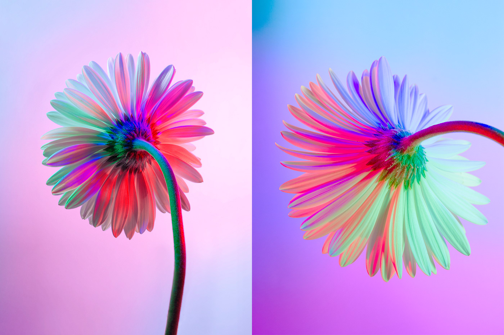

Etape 4

Il y a des odeurs qui nous semblent désagréables telles que les odeurs de viande en décomposition. Mais les diptères aiment ce genre d’odeurs. Quand le pollen ou le nectar sont odorants, ils émettent un signal qui active les pollinisateurs. Ainsi, ils éviteront de faire des visites inutiles sur des fleurs qui ont déjà été visitées par un autre insecte.